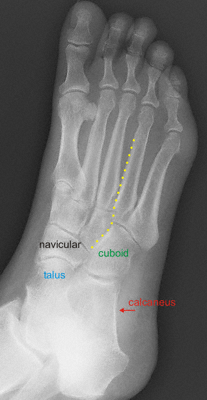

- Medial border of the 2nd MT should be colinear with the medial border of the middle cuneiform
- 1st-2nd intermetatarsal space at the TMT joint should be equal to the space between the medial and middle cuneiforms
- Medial border of the 4th MT should be colinear with the medial border of the cuboid
- 2nd-3rd intermetatarsal space at the TMT joint should be equal to the space between the medial and middle cuneiforms
- Dorsal displacement of the MTs implies ligamentous injury
 Normal AP foot: yellow dotted line highlights normal TMT joint alignment
Normal AP foot: yellow dotted line highlights normal TMT joint alignment

Normal oblique foot: yellow dotted line hightlights normal TMT joint alignment
 Normal lateral foot
Normal lateral foot